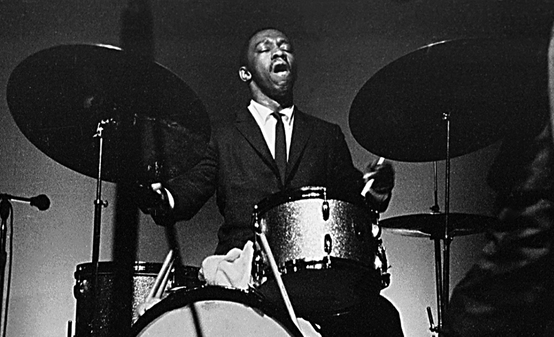

아트 블레이키
일평생 하드밥(Hard Bop)만을 고집한 재즈 드럼의 전설인 아트 블레이키(Art Blakey)는 미국의 재즈 드러머이자 밴드리더였다.
그는 칙 웹 (Chick Webb) · 시드 캐틀랫 (Sid Catlett) 과 만나 조언을 얻었으며 레이 보덕 (Ray Bauduc) 에게 영향을 받았다.
1942년엔 메리 루 윌리엄스 (Mary Lou Williams) 와 뉴욕에서 연주했으며, 다음 해부터 44년까지 플레처 헨더슨의 밴드 소속으로 미국 남부에서 투어를 했다.
그 뒤 그는 보스턴을 기반으로 둔 자신만의 빅 밴드를 이끌다가, 디지 길레스피의 채용으로 빌리 엑스타인의 밴드 드러머로 들어오게 되었고
1944년부터 47년까지 거기서 활동했다. 엑스타인의 밴드에서 그는 빌리 홀리데이, 덱스터 고든, 찰리 파커 등을 만나고 같이 공연했다.
그러다 엑스타인의 밴드가 해체됐다. 해체 직후 1947년 델로니어스 몽크의 녹음에 참여했다. 이후 1948년, 그는 아프리카로 떠나서 폴리리듬과
이슬람 문화에 대해 배웠고 'Bu'라는 별명을 얻었다. 아프리카 여행 이후 그는 이슬람으로 개종했고 이름도 압둘라 이븐 부하이나로 바꿨다.
본인은 아프리카 여행에 대해 "할 일이 없어서, 그리고 종교와 철학을 공부하기 위해 그곳에 갔다. 드럼은 안중에 없었다.
나는 선택의 여지없이 교회에 던져졌고, 나는 그들의 기독교도가 되고 싶지 않았다."라고 말했다
이후 세븐틴 메신저스 (The Seventeen Messengers) 란 밴드를 잠깐 이끌었고, 1950년대 초엔 호레이스 실버와 여러 번 녹음하다가
1953년에 실버와 공동으로 5중주를 이끌기 시작했다. 그들은 다음 해 재즈 메신저스란 이름을 채택했고
1955년에 행크 모블리, 케니 도햄과 호레이스 실버 앤 더 재즈 메신저스 (Horace Silver and the Jazz Messengers
를 결성하나 1년 만에 실버가 밴드를 떠나며 그가 리더가 되었다. 그 뒤로도 그는 재즈 메신저스란 명칭을 계속 유지했다.
그는 프리랜서로도 일했으며, 1958년엔 명반 Moanin'을 내놓기도 했다.
1950년대 말엔 델로니어스 몽크와의 협업에 집중했다. 1950년대부터 60년대 초까지는 재즈 메신저스에서 수많은 음악가들이 걸쳐간 시기였다.
또한 재즈 메신저스는 1960년엔 일본에서 공연한 최초의 미국 재즈 밴드가 됐으며, 유럽을 순회하며 블루 노트 레코드 소속으로 여러 음반들을 녹음했다.
그러나 시간이 흐르며 하드 밥은 인기를 잃어갔다. 그럼에도 그는 하드 밥을 고수했고 계속해서 밴드를 이끌어갔다.
재즈 메신저스는 젊은 음악가들이 견습할 수 있는 장소들 중 하나였으며 1980년대엔 신정통주의를 주장한 멤버이던 윈튼 마살리스가 주목받았다.
80년대에 재즈 메신저스는 많은 영예를 안았다. 말년에 그는 청력을 잃었으나 음악 활동을 멈추지 않았다.
그들의 음악에는 무언가, 마음을 관통하는 것이 있었다.
새로운 가능성을 품은 무엇이 될 것 임을 본능적으로 느낄 수 있다. 이는 역시 음악 그 자체가 충실하고, 미래 지향적인 자세를 지니고 있으며,
동시에 소울풀했기 때문이리라.
여섯 명의 의욕적인 뮤지션들의 빚어내는 톤은 그야말로 힘차고 도발적이며 신비하고, 그리고.... 검었다. 왜인지는 모르겠지만 그 소리를 검은 색상으로 느꼈다.
그들이 흑인이라는 시각적인 이유도 있었겠지만 그들의 톤에서 느낀 색이, 정말 검었던 것이다. 그것도 아주 새카만 것이 아니라, 초콜릿색이 약간 섞인 깊은 검정물이 든다.